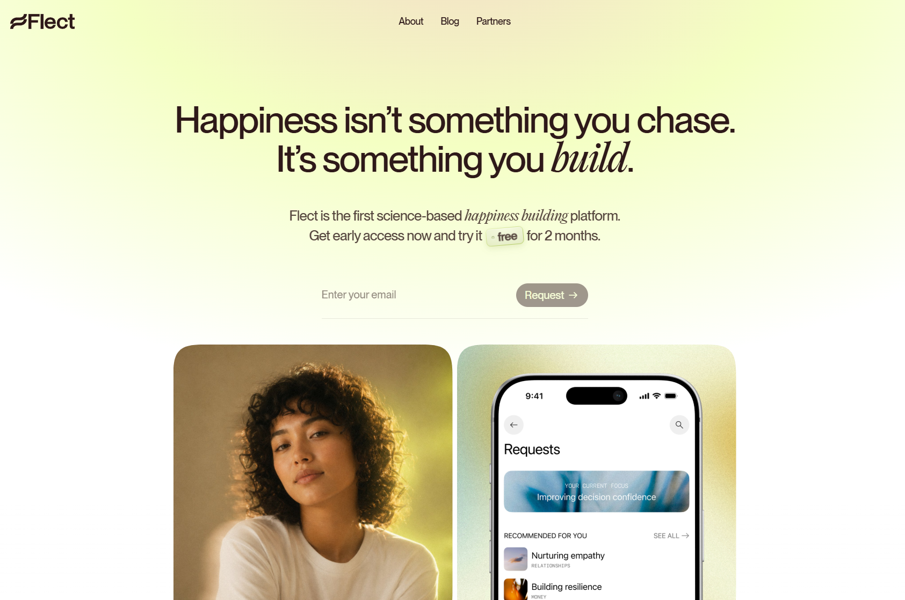

Flect
- Здоровье и медицина
- Велнес
- Минимализм
- Редакционный
- Игривый
- Сайт жив

Что это
Промо-сайт велнес-приложения, которое помогает понять, что влияет на ощущение счастья, и выстроить привычки. Одна длинная страница с методом из трёх шагов, индексом Happiness Lifestyle Index, сравнением подходов и формой раннего доступа. Светлый дружелюбный сайт велнес-приложения для «построения счастья».
Что смотреть в первую очередь
Смотреть как пример сайта, собранного вообще без библиотек: проявление текста по словам, закреплённая сцена с шагами метода, параллакс, счётчик индекса и состояния формы — всё на requestAnimationFrame и IntersectionObserver, плюс собственный WebGL-шейдер там, где обычно берут three.js.
Чем интересен
- Сайт собран вообще без зависимостей: ни фреймворка, ни сборщика, ни анимационных библиотек — вся моторика на requestAnimationFrame и IntersectionObserver, а на страницах-заглушках фон рисует собственный шейдер вместо three.js.
- О сознательном отказе от библиотек говорит след в разметке: версия скриптов помечена как no-lenis, а в коде остался комментарий про нативный скролл — плавный скролл удалили, оставив его только для переходов по якорям.
- Фотографии обрезаны по суперэллипсу: вместо скругления углов используется polygon примерно из ста двадцати точек, поэтому снимки выглядят «сквошами», а не прямоугольниками со скруглением.
- Заголовок и лид проявляются не целиком, а по словам: скрипт режет текст на фрагменты, и каждый всплывает из размытия со своей задержкой.
- SEO проработано заметно выше среднего для рукописного сайта — карта сайта с приоритетами, robots с директивой Sitemap, канонический адрес, полные карточки для соцсетей и микроразметка; при этом в карте лежат две страницы-лендинга, на которые с сайта не ведёт ни одной ссылки.
- Часть обещаний не выполнена: страницы блога и партнёров выложены заглушками с надписью «This part is still settling», кнопки скачивания в подвале ведут на якорь той же страницы, а не в магазины приложений, и контактов в подвале нет вовсе — единственная почта спрятана на юридических страницах.
Паспорт
- Домен
- getflect.app
- Тип сайта
- Лендинг
- Категории
- Здоровье и медицина
- Подкатегории
- Велнес
- Для кого
- Обычным пользователям, Дизайнерам, Продуктовым командам
- Стиль
- Минимализм, Редакционный, Игривый
- Язык
- Английский
- Страна
- США, Нью-Джерси
- Автор
- не указано
- Год
- 2026
- Добавлен в коллекцию
- 02.10.2026
Палитра
-
#FCFFEF— 57% кадра -
#F4FAC6— 22% кадра -
#98774D— 5% кадра -
#281913— 3% кадра -
#B5A483— 3% кадра
- Режим
- Светлая
- Цвет фона
- Нейтральный
Технологии
- Статический сайт на чистом HTML, CSS и JavaScript
- Vercel
- Собственный WebGL-шейдер без three.js
- Анимации на requestAnimationFrame и IntersectionObserver
- Отказ от библиотеки плавного скролла
- Шрифты Pangram Pangram самохостом
- Токены дизайна из Figma в CSS-переменных
- Бэкенд формы на отдельном поддомене
- Микроразметка JSON-LD
- Ленивая загрузка изображений
- Аналитика